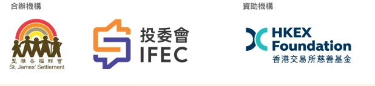

MORE TO EXPLORE
一起學，多走一步。
網站用來玩遊戲、完成打卡；WhatsApp 社群用來接收題目、題解與內容，交流你的想法。
由於活動資源有限，每日打卡、攤位活動及獎勵暫時只開放予已驗證 HKU 電郵的參加者；遊戲、理財內容及社群公開。
Before we start
開始之前，先讓我們了解你。首次問卷約需 10–12 分鐘，請用 HKU Connect 帳戶填答。
首次問卷入口每日打卡
每日打卡將供已驗證 HKU 電郵的參加者使用。活動尚未開始，現時未開放提交或計算進度。
前往 HKU 電郵驗證 ↗攤位活動
攤位活動及參與安排籌備中，詳情將於日後公布。
前往 HKU 電郵驗證 ↗WhatsApp 學習社群
這是接收學習內容的主要地方：題目、題解、街訪、理財講解、AI 影片與訪談，都會在這裡分享和討論。加入社群毋須網站帳戶。
加入 WhatsApp 社群 ↗社群邀請連結準備中。
排名與參與積分
計劃以每日參與作為排名基礎，正式計分及去重規則將在活動開放前公布。
目前沒有排名紀錄，遊戲成績也尚未儲存至帳戶。
獎勵與兌換
獎勵將供已驗證 HKU 電郵的參加者參與；內容、資格和領取方式稍後公布。
現階段沒有開放兌換的獎勵。
前往 HKU 電郵驗證 ↗PERSONAL FINANCE AMBASSADOR PROGRAMME
個人理財大使計劃 2026–2027
人生「財」開始 · 由港大學生團隊「搏富臨」策劃富臨錢進號

- 計劃合辦機構
- 聖雅各福群會
投資者及理財教育委員會（投委會） - 計劃資助機構
- 香港交易所慈善基金
HKEX Foundation